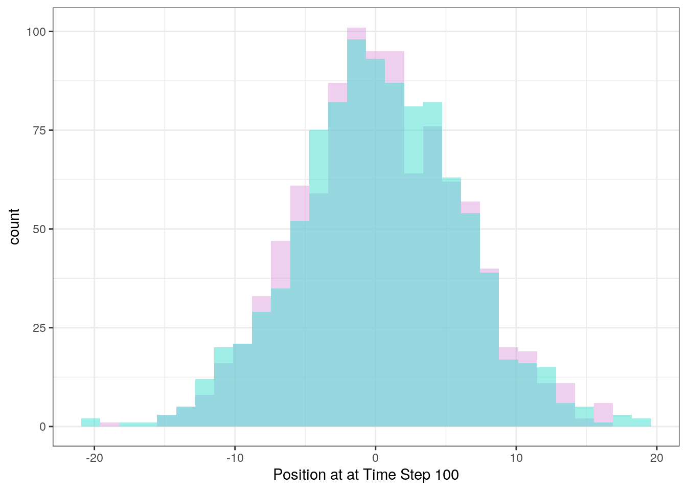

3.5 The Wright-Fisher Model I - Neutral Evolution
The Wright-Fisher model provides us with a simulation-based appraoch to examine the fluctuations in allele frequency across generations. This model makes a large number of assumptions about the nature of populations, including:
- Constant population size
- Everyone reproduces once per generation, at the same time
- No selection
- No mutation
- Random mating
And while these are all simplifications compared to any real world biological system, the model allows us to make powerful predictions about genetic variation.
Since this will be our first time working with random simulation, let’s first model a simpler scenario - the Random Walk.
3.5.1 Random Walks
The Random Walk simulates the motion of a particle moving randomly - think of a diffusing molecule or a small bacterium. At every time step, the particle can move a distance in any direction. The direction and magnitude of motion are independent of past behavior, hence making it random (this is more formally called a Markov Process).
When simulating the random walk, we can generate random x and y displacements using the runif() function.
The conventional arguments for runif() are runif(n, min, max), with n being the number of random values to return and min and max being the upper and lower bounds.
For example, 5 random numbers between 10 and 12:
## [1] 10.74503 11.84529 10.99377 11.25278 11.71908Now, the random walk function, taking as an argument the number of time steps to walk:
randomWalk <- function(timeSteps){
# Initialize starting coordinates
x <- 0
y <- 0
# Vectors to store positions
x_positions <- c(x)
y_positions <- c(y)
# Loop through require number of time steps
for (i in seq(timeSteps)){
# Randomly update my x and y positions
x <- x + runif(n = 1, min = -1, max = 1) # Can move between one unit left and one unit right
y <- y + runif(n = 1, min = -1, max = 1)
# update lists
x_positions <- c(x_positions, x)
y_positions <- c(y_positions, y)
}
# Combine into data frame
df <- data.frame(
x = x_positions,
y = y_positions
)
# Return the data frame to user
return(df)
}We can run this function once and plot the path taken:
path <- randomWalk(100)
ggplot(path, aes(x = x,
y = y)) +
geom_path() +
xlab("X") +
ylab("Y") +
theme_bw()
Because there is randomness in this model, no one iteration of the random walk is sufficient to describe the overall behavior of the system.
However, we can easily run our model multiple times:
# Run once
path <- randomWalk(100)
# Add a column keeping track of the trial number
path["trial"] <- 1
# Run 999 more times
for (i in seq(2, 999)){ # Note that we start with trial 2
# temporary data frame to store each iteration of the results
toAdd <- randomWalk(100)
toAdd["trial"] <- i
# add to path data frame
path <- rbind(path, toAdd)
}
# Plot the paths taken in each trial
ggplot(path, aes(x = x,
y = y,
color = factor(trial))) + # trial number converted to factor to make this into discrete categories
geom_path(alpha = 0.08) + # Reducing the opacity
theme_bw() +
xlab("X") +
ylab("Y") +
guides(color = "none") # We remove the color legend, since it takes up the whole plotting space
Each individual run is quite faint here, but you can see that in total they all cluster around the center. If we care about the ultimate expected position of the particle given an arbitrary run time, we can summarize this with a histogram:
# Vectors to store final positions
finalX <- c()
finalY <- c()
# Run simulation 1000 times
for (i in seq(1000)){
# Run the simulation
toAdd <- randomWalk(100)
# Get the final coordinates and add to vectors
finalX <- c(finalX,
toAdd$x[nrow(toAdd)]) # Final x
finalY <- c(finalY,
toAdd$y[nrow(toAdd)]) # Final y
}
# Convert to df
df <- data.frame(
x = finalX,
y = finalY
)
# Plot as a histogram
ggplot(df) +
geom_histogram(aes(x = finalX), fill = "plum", alpha = 0.5) +
geom_histogram(aes(x = finalY), fill = "turquoise", alpha = 0.5) +
xlab("Position at at Time Step 100") +
theme_bw()## `stat_bin()` using `bins = 30`. Pick better value with `binwidth`.
## `stat_bin()` using `bins = 30`. Pick better value with `binwidth`.
Confirming our observations from the above figure, the random walk centers around the starting position. Now with these techinques under our belt, we’re ready to simulate the Wright-Fisher model.
3.5.2 Wright-Fisher Simulation
Our simulation of the Wright-Fisher model is conceptually similar to the random walk. We start at some allele frequency, and every generation there is a random displacement of the allele frequency, representing the actions of genetic drift.
In the random walk, displacement was drawn from the uniform distribution and the magnitude was equally likely to be any value between the min and the max. Here, since we are modelling many independent reproduction events, each of which has a probability of passing our allele to the next generation, we will instead use the binomial formula to draw the number of copies of our allele.
Drawing from the binomial formula can be done using the rbinom() function. Normal use of the rbinom() function takes three parameters: rbinom(n, size, p), with n being the number of values to draw, size being the number of trials, and p being the likelihood of success for each individual trial.
For example, 3 binomial values, with 10 trials each and a success rate of 80%:
## [1] 6 6 5For us, the number of trials is the number of chromosomes in the population and the success rate per trial is the frequency of our allele in the population.
WF <- function(AF, popSize){
# Calculate the number of chromosomes in the population
nChrom <- 2 * popSize
# Create a list to store allele frequencies across time
AFs <- c(AF)
while (AF < 1 & AF > 0){
# Get number of copies of my allele in next generation
nAlleleNextGen <- rbinom(n = 1,
size = nChrom,
p = AF)
# Convert to allele frequency
AF <- nAlleleNextGen / nChrom
# Add to list
AFs <- c(AFs, AF)
}
# Combined into data frame
df <- data.frame(
time = seq(0, length(AFs) - 1),
AF = AFs
)
return(df)
}Running this once:

Multiple iterations of the model:
# Run the model once
AF <- WF(1/200, 100)
# Add a column to keep track of trial number
AF["trial"] = 1
# Run 499 more times
for (i in seq(2, 500)){
# Temporary df to store current trial
toAdd <- WF(1/200, 100)
toAdd["trial"] <- i # Add trial number
# Add to overall df
AF <- rbind(AF, toAdd)
}
# Plot
ggplot(AF, aes(x = time,
y = AF,
group = factor(trial))) +
geom_line() +
theme_classic() +
ylim(0, 1) +
guides(color = "none")